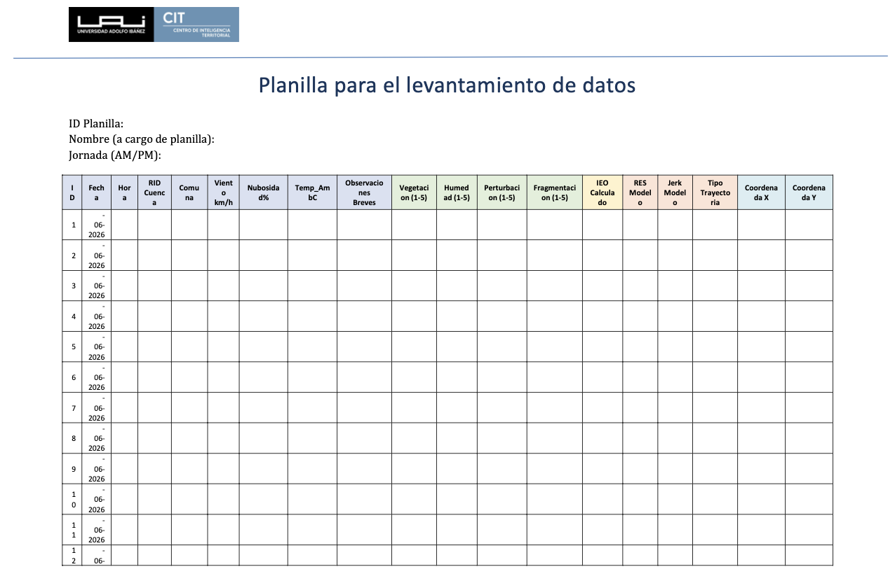

15 Fichas de Cuencas
Ficha operativa para registro de terreno
Este capítulo define la ficha mínima que debe acompañar cada cuenca visitada. Su función es ordenar el registro de terreno, no volver a explicar la selección de cuencas ni la rúbrica IEO. La selección técnica se presenta en Section 12.8 y Section 12.10; la decisión logística de campaña se define en Section 13.2; y la evaluación IEO se rige por Section 14.2.1 y Section 14.2.2.
Antes de salir a terreno se precargan los datos MRCT y la ubicación objetivo. En terreno se completan las condiciones ambientales, las observaciones breves y las cuatro notas IEO de cada punto de muestreo.
15.1 Variables de la ficha
Cada ficha debe mantener juntas las variables de identificación, precarga MRCT y registro de terreno. La tabla siguiente define los campos reales que deben aparecer en la ficha.
| Bloque | Variable | Llenado | Uso |
|---|---|---|---|
| Identificación | ID planilla | Gabinete | Identifica la planilla física o digital. |
| Identificación | Nombre a cargo de planilla | Gabinete / terreno | Define la persona responsable del registro. |
| Identificación | Jornada AM/PM | Terreno | Indica el bloque horario del levantamiento. |
| Registro de punto | ID |
Terreno | Numera cada punto de muestreo dentro de la cuenca. |
| Registro de punto | Fecha | Terreno | Registra la fecha de observación. |
| Registro de punto | Hora | Terreno | Registra la hora local de observación. |
| Precarga de cuenca | RID |
Gabinete | Identificador MRCT de la cuenca. |
| Precarga de cuenca | Cuenca | Gabinete | Nombre o etiqueta operativa de la cuenca. |
| Precarga de cuenca | Comuna | Gabinete | Comuna asociada al punto o cuenca. |
| Registro ambiental | Viento km/h | Terreno | Condición ambiental y restricción potencial para dron. |
| Registro ambiental | Nubosidad % | Terreno | Condición de visibilidad y comparabilidad. |
| Registro ambiental | Temp_AmbC |
Terreno | Temperatura ambiente en grados Celsius. |
| Registro de punto | Observaciones breves | Terreno | Acceso, agua visible, nieve/hielo, perturbaciones, restricciones o representatividad. |
| IEO | Vegetación (1-5) | Terreno | Nota de vigor y cobertura vegetal según Section 14.2.1. |
| IEO | Humedad (1-5) | Terreno | Nota de humedad superficial o agua visible según Section 14.2.1. |
| IEO | Perturbación (1-5) | Terreno | Nota de impacto antrópico; vector negativo en Section 14.2.2. |
| IEO | Fragmentación (1-5) | Terreno | Nota de continuidad ecosistémica; vector negativo en Section 14.2.2. |
| IEO | IEO calculado | Gabinete / terreno | Índice observado calculado para el punto. |
| Precarga MRCT | RES modelo |
Gabinete | Valor de resiliencia estimado por la MRCT. |
| Precarga MRCT | Jerk modelo | Gabinete | Señal dinámica que justifica o contextualiza la visita. |
| Precarga MRCT | Tipo trayectoria | Gabinete | Clasificación de trayectoria asociada a la cuenca. |
| Ubicación | Coordenada X | Gabinete / terreno | Coordenada objetivo o coordenada observada del punto. |
| Ubicación | Coordenada Y | Gabinete / terreno | Coordenada objetivo o coordenada observada del punto. |
Las columnas de terreno deben mantenerse alineadas con el protocolo: viento, nubosidad y temperatura se registran como condiciones ambientales (Section 14.5); vegetación, humedad, perturbación y fragmentación se evalúan según la rúbrica IEO (Section 14.2.1); y fotografías, dron, acceso, agua visible, nieve/hielo o dudas de representatividad se documentan en observaciones breves cuando no tengan una columna específica.
15.2 Ficha tipo por cuenca
15.2.1 Identificación y precarga
| Campo | Valor |
|---|---|
| ID planilla | Por definir |
| Nombre a cargo de planilla | Por definir |
| Jornada | AM / PM |
RID |
Por definir |
| Cuenca | Por definir |
| Comuna | Por definir |
RES modelo |
Por definir |
| Jerk modelo | Por definir |
| Tipo trayectoria | Por definir |
| Coordenada X objetivo | Por definir |
| Coordenada Y objetivo | Por definir |
| Criterio de selección | Referir a Section 12.8, Section 12.10 o Section 13.2 |
15.2.2 Registro de terreno

El registro debe completarse con 5 a 10 puntos de muestreo por cuenca, tal como define Section 14.2. Al cierre de cada visita se revisa el control de completitud de Section 14.7 y luego la información se consolida en Section 16.3.
15.3 Uso posterior
La ficha es la fuente primaria para la integración MRCT-terreno. Sus campos alimentan la síntesis de mediciones de Section 16.4 y la tabla de validación de Section 17.1. La clasificación de consistencia no se decide en la ficha: se aplica posteriormente con los criterios de Section 17.2.
Las cuencas no visitadas, reemplazadas o descartadas también deben registrarse, indicando la causa principal: acceso, permiso, distancia, baja representatividad, riesgo, clima esperado o cambio de prioridad técnica.